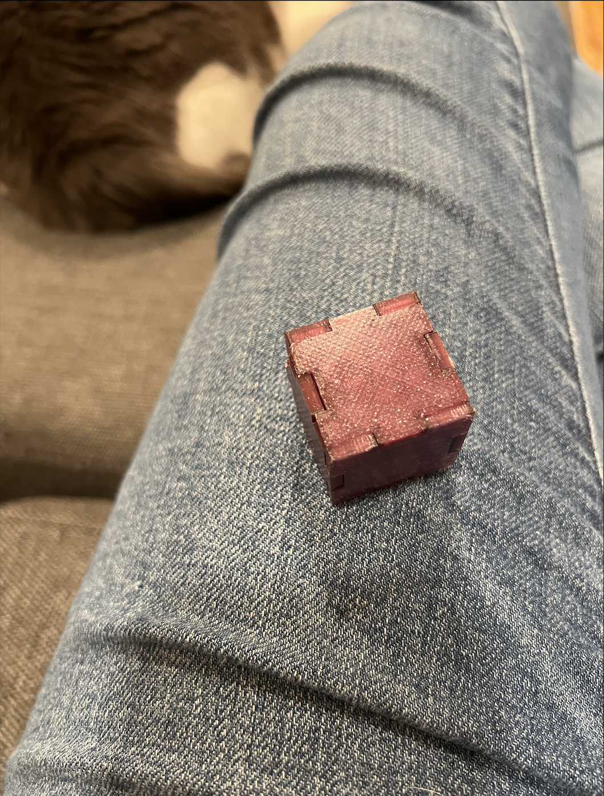
Here is all the documentation for assignment 4! In this assignment, we had the choice between milling or 3D printing a box. I chose 3D printing due to my limited availability on going to the Mill. All source files and images can be found here [includes Rhino and STLs]: Emily's 533 Github Assignment 4 Files
After spending a lot of time last week debugging my 3D printer and a busy work and Halloween week ahead of me, I decided to continue using my 3D printer for this assignment. Finger joints seemed like the obvious approach for me for this assignment because groove and dovetails seemed a more complex shape to model. I was thinking about doing this parametrically in Grasshopper using a polar array, but then the math got complicated for me trying to make the other pieces 'offset' so I could fit them together. I tried some googling, but couldn't seem to understand how to do this... so I decided for a direct modeling approach. So, I tried to think of starting out simply with a sketch of the most basic finger joint shape. 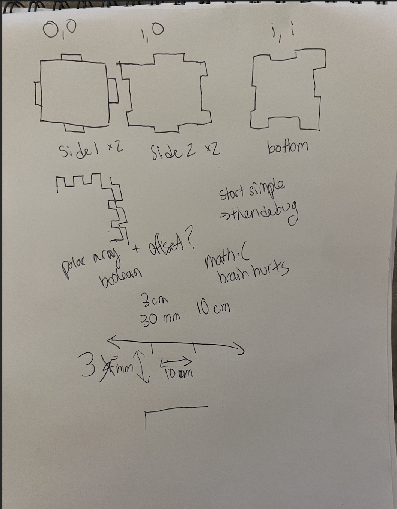 I determined that there needed to be 3 different 'side' versions for a cube box shape to work. Now to build this, I found a somewhat useful video on YouTube, I didn't follow this exactly but using 'CurveBoolean' was very helpful in this case. 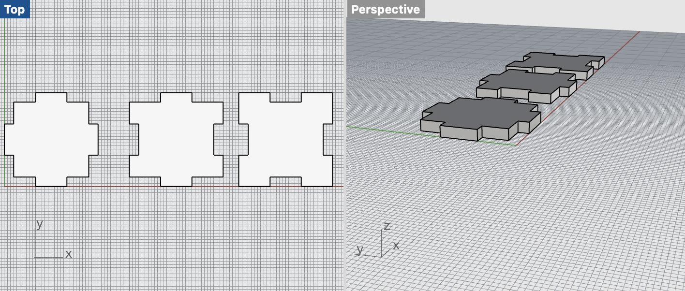 I exported each side as a separate STL with zero tolerance. Since it was going to be a small shape, zero tolerance did not make the file size too big. Since I also wanted a precise shape and fit, I chose Super Quality in Cura slice settings. My sides were 30mm length and width with 10mm 'fingers'. Each plates height was 3mm. Side 1 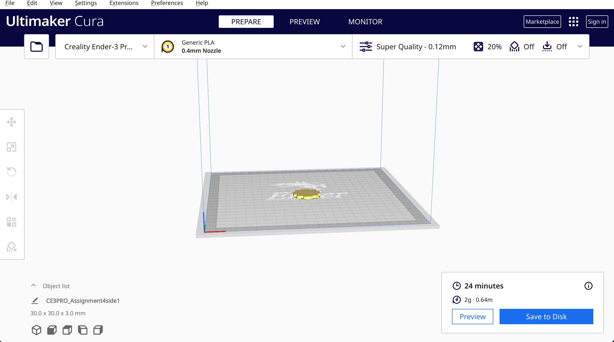 Side 2 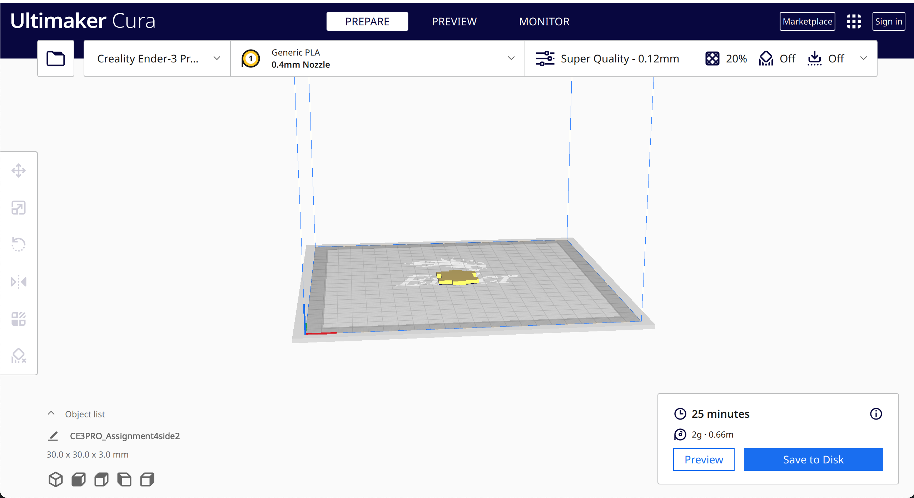 Side 3 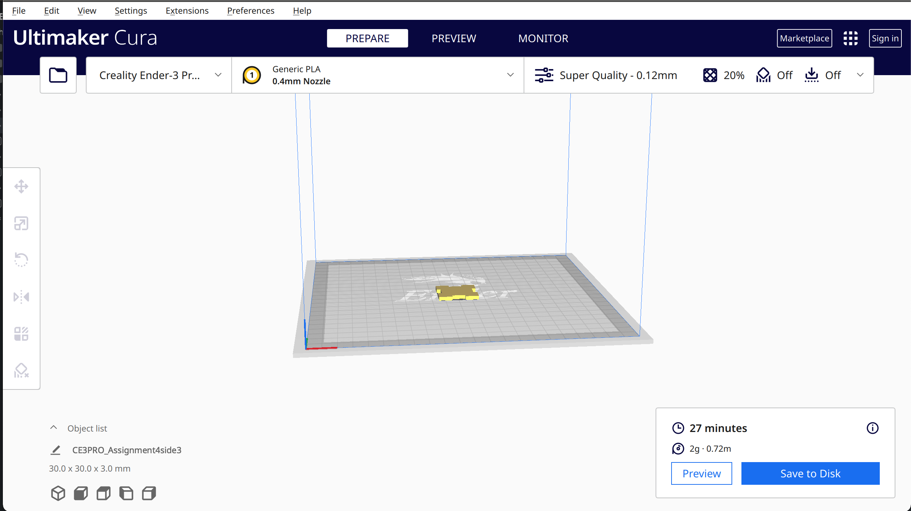 So, I was basically out of filament from the last time I printed, so I changed to a new roll, my first time changing filament! I got this cool purple sparkly filament to try out. After changing the filament, I thought it would good to try to leveling protocol again. Even though nothing should've changed from last week, the nozzle scratched my bed :(! I went through releveling gcode from last week and adjusted the bed. It took a few tries, but finally was level again! Then, began my first side print. However, the fence wasn't adhering right and messing up the print. Since I was pretty confident in my level already, I was looking for other options. Jessica reminded me of alternatives such as bed temp and nozzle temp. Since my bed temp was already at 60, the max rated for the PLA, I just increased the nozzle temp from 200 to 205. I tried printing my simple cube from last week, just to ensure it wasn't my new gcode that was the issue. The new temp on the cube worked great. However, when switching back to the side1 gcode, the adhesion was better but still not perfect. So, I finally broke out the glue stick. With increasing temp and glue stick, the side1 print came out correctly! Perhaps there were differences due to this being a translucent, glittery filament. I printed all the sides consecutively and checked the fit part way through. It took a bit of force to click into shape, but they fit, so I continued printing the remaining sides. 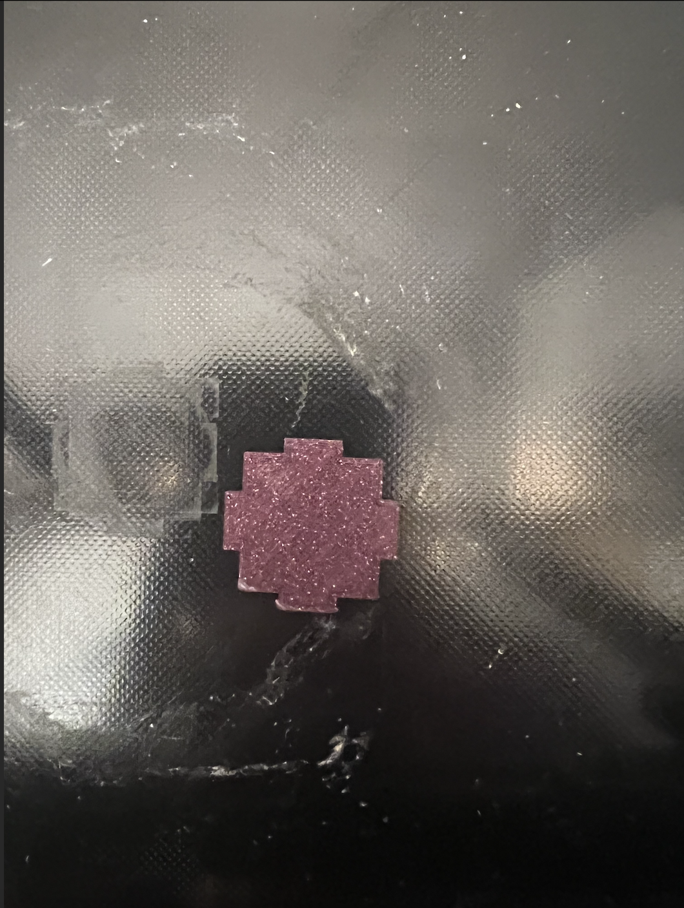 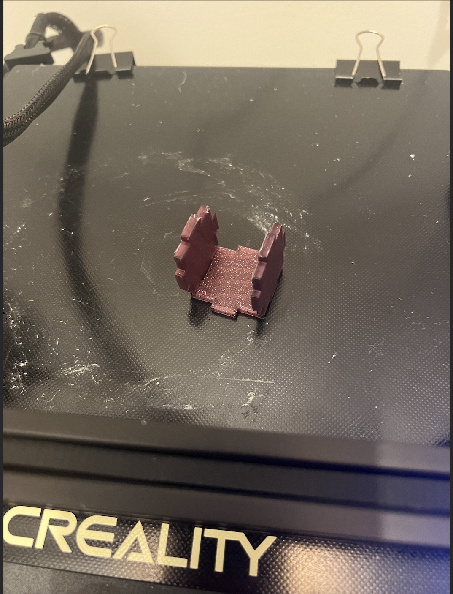 I was able to assemble my box, within 1mm of the target size! 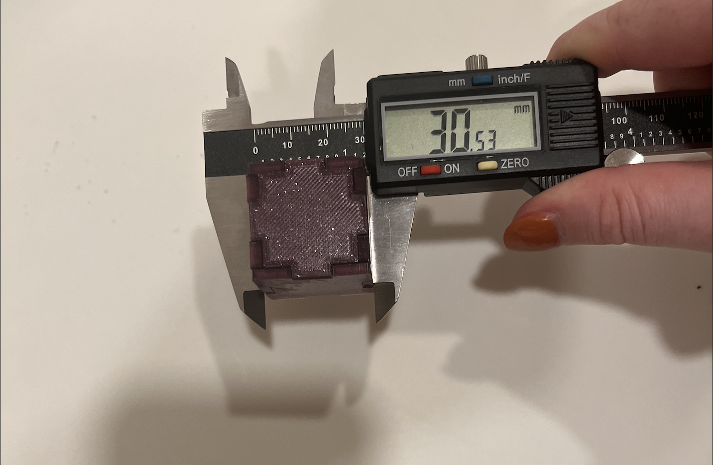 Here is the final assembly. 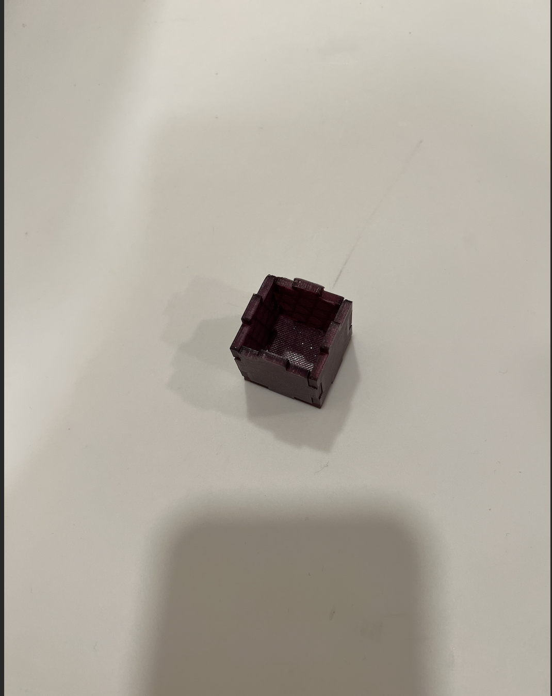 I wanted to make sure it passed the sugar test, so I got out my bag of sugar to perform the test. 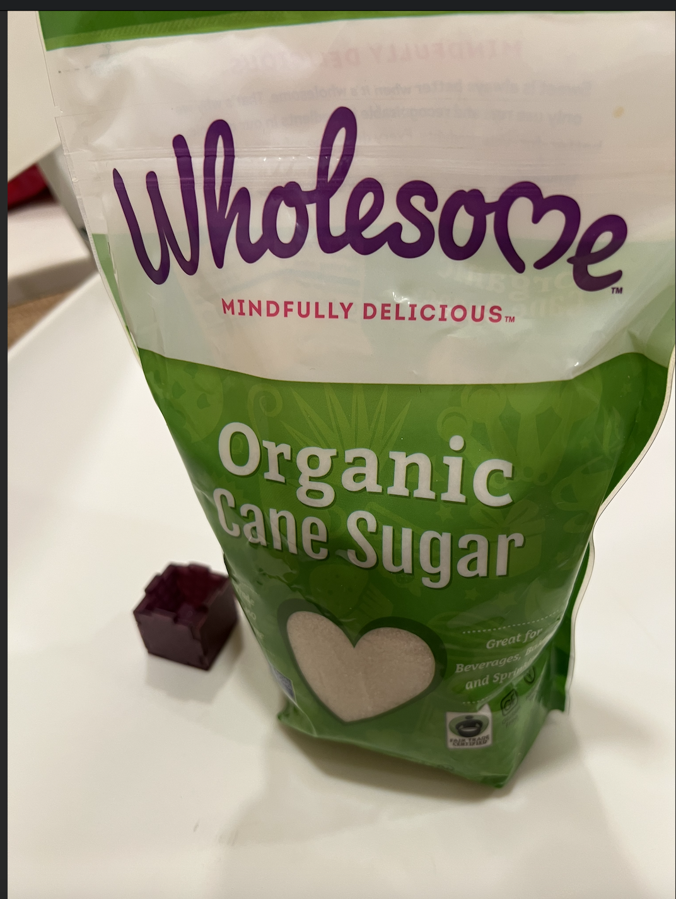 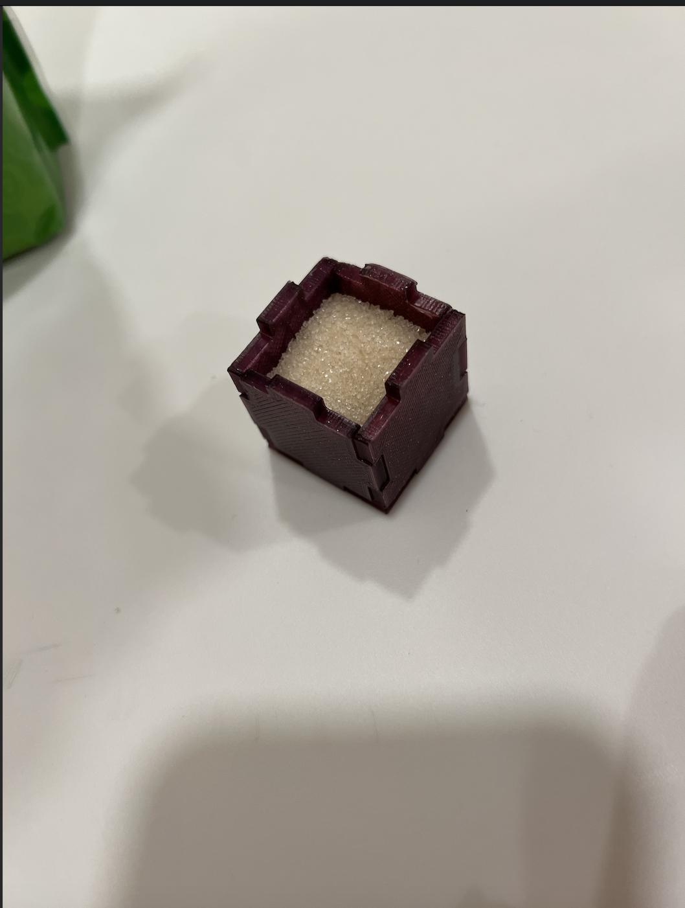 See my video here Luckily, my cube worked out due to super quality print settings. But, in the future, to ensure an even better fit, I would likely change the finger/slot size to have a size difference anywhere between 0.01 and 0.05mm. I began sketching a design with even more fingers since I wanted to explore beyond the basic box. I couldn't finish this second box the assignment deadline, but going to try building it this week to advance my skills! 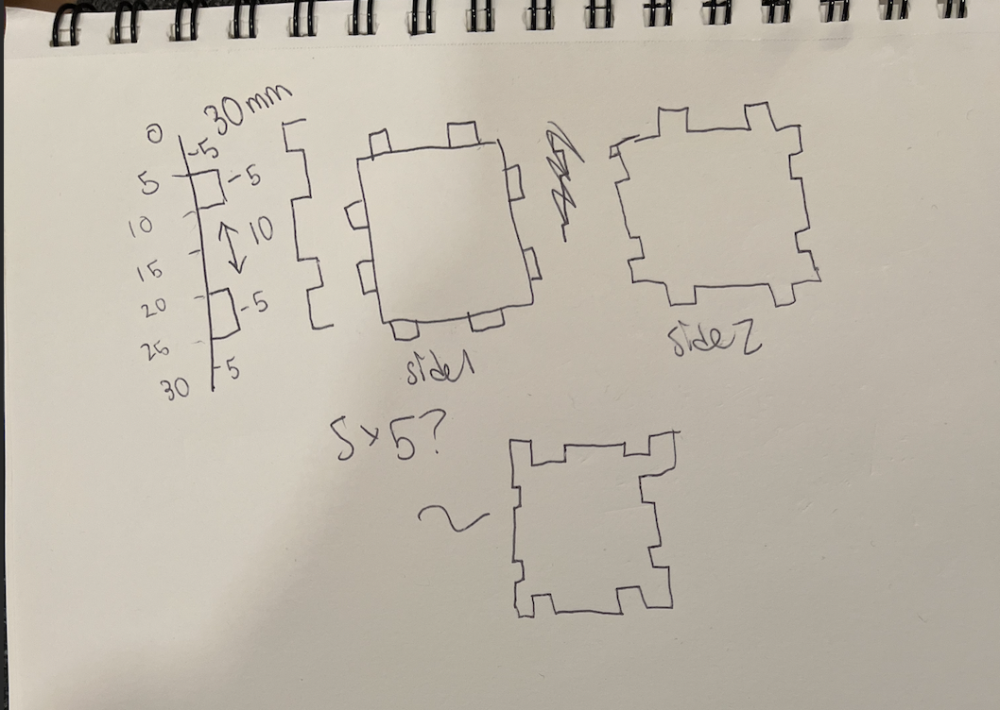 Acknowledgements: Peer teachers: Jessica Douma for helping with adhesion issues! Moral support: Jessica Teaching support: TA Junchao and YouTube Again the link to all documents if not wanting to scroll up :P [Includes Rhino and STL] : Emily's 533 Github Assignment 4 Files